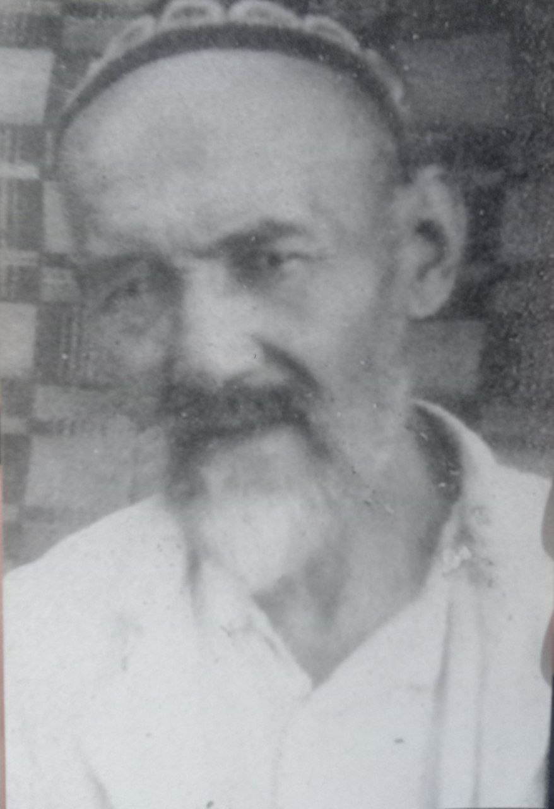

Shog'ofur

Shog'ofur
Tug'ildi:
1883
Vafoti:
11-iyul 1949
Otasi: Shoyo'ldosh
Onasi: Robiya
Turmush o'rtog'i:
Xayri
- 1 Hayoti
- 2 Oilasi
Hayoti
Shog'ofur buva juda xushmomila, kamso'z, g'oyatda aqilli boy, tugammas did farosat egasi edilarki o'z kasblarida xarqanday nozik va nafis asboblar yasab tuzatar edilar. Oilani va mehnatni sevgan kishi edilar. Eski shahar bozorida chlangarlik kasbida ishlaganlar. Buvalari shoinog'om otalari shoyo'ldosh bobolar butun umrlari pichoqchilik, temirchilik kasbi bilan o'tgan. Shog'ofur buvamiz 7 yoshlarida diniy maktabga domlaga o'qish uchun borganlar lekin bir necha oy o'qib domlani bir qattiq tayog'idan so'ng maktabga bormaganlar. Otalari Shoyo'ldosh buva bilan temirchilikda ishlaganlar. Shu kasb bilan 7 yoshdan 66 yoshgacha ya'ni 60 yil ishlaganlar. Umrlarida 2-3 yoshlarida yuzlariga chechak chiqib, 3-4 oy kasal bo'lganlar. 1932-1933 yili bod kasali bilan 12 oy va bayram , xayit kunlari ishdan qolganlar. 10-iyul 1949 yili kunduz kuni soat 3 da og'rib ertasi 11 - iyul soat 12 larda vafot etganlar.
Oilasi
Farzandlar 5 ta.